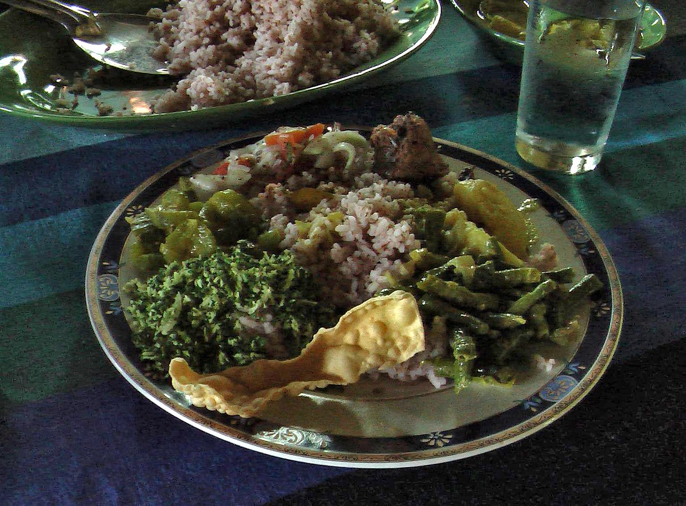
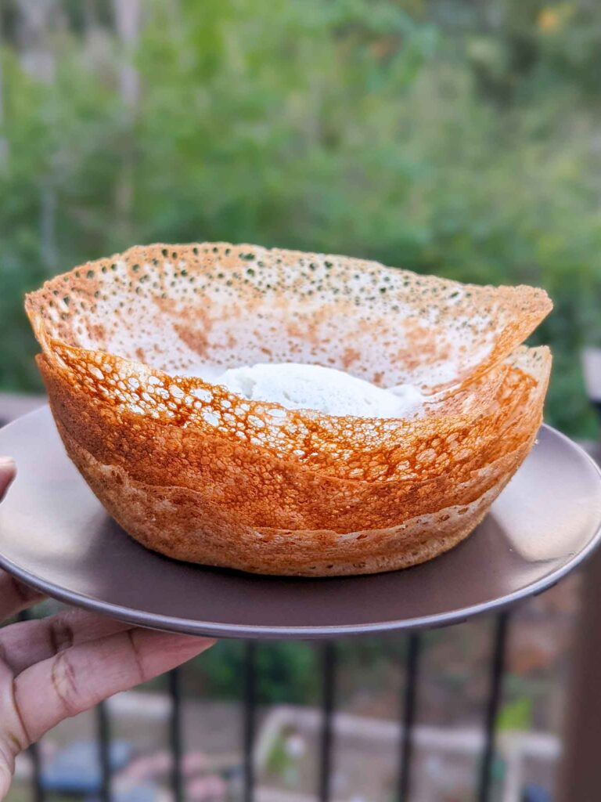
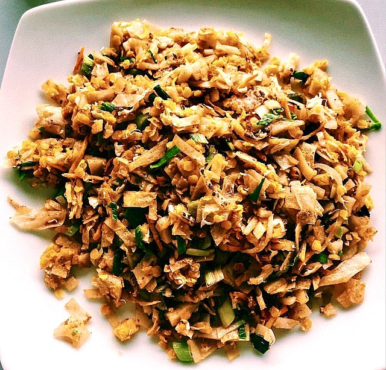

Traditional Sri Lankan food is rich in flavor and often spicy, and features a variety of dishes made with rice, vegetables, fish, and coconut
Rice and curry
Rice and curry is a popular dish in Sri Lanka, as well as in other parts of the Indian subcontinent.

hoppers
Bowl-shaped pancakes made from fermented rice batter and coconut milk.

Kottu
Kottu roti, alternatively spelled kothu roti, is a Sri Lankan dish consisting of chopped roti, a meat curry dish of choice along with scrambled egg, onions, and chillies.
